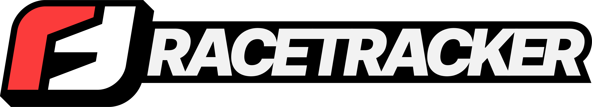
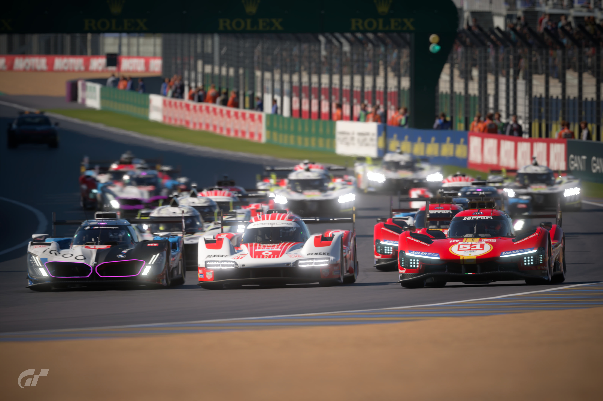
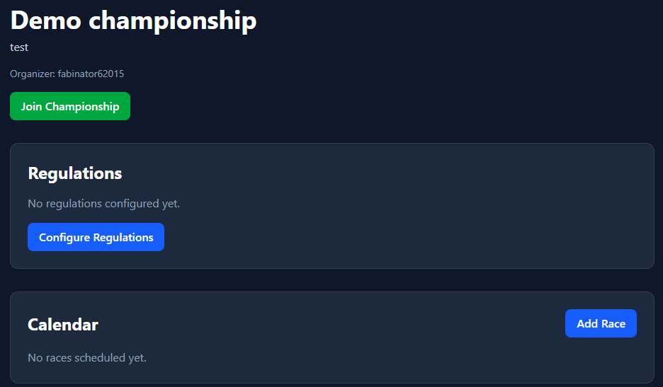
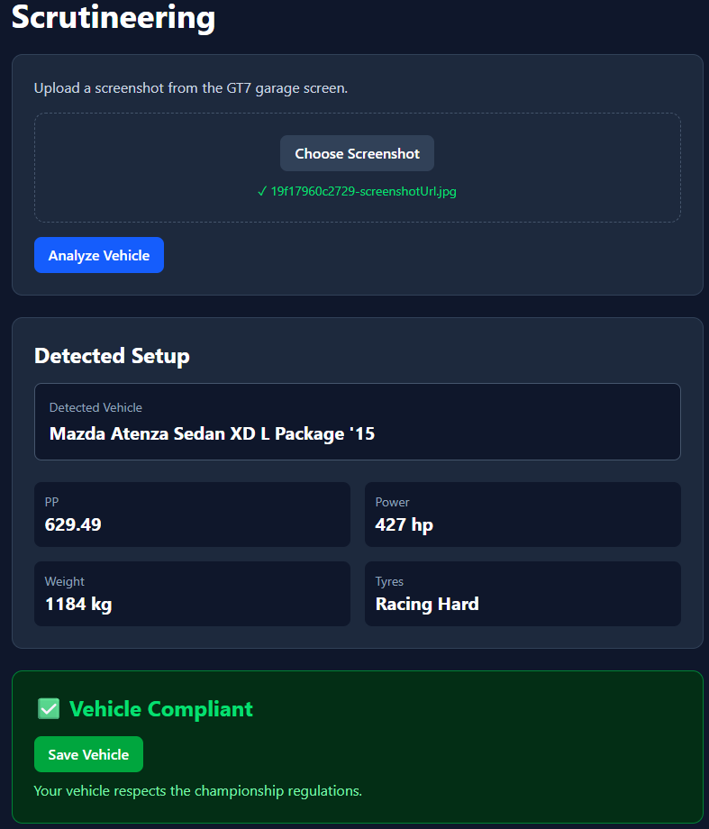
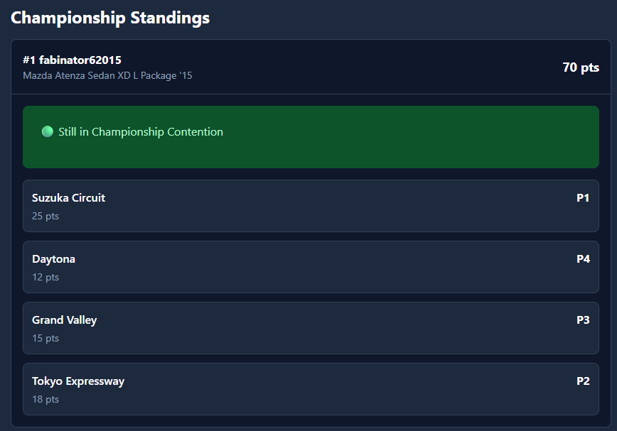

RaceTracker centralizes championship management, race results, standings, driver profiles and automated scrutineering.

Create and manage Gran Turismo 7 championships with custom regulations, race calendars and participant registration.

Upload a GT7 garage screenshot and automatically verify vehicle compliance against championship regulations using OCR technology.

Track championship rankings, race results, victories, podiums and driver performance.
RaceTracker was inspired by my passion for sim racing and Gran Turismo 7. While participating in online championships, I noticed that many organizers still relied on spreadsheets, manual vehicle checks and scattered tools to manage competitions.
I wanted to build a centralized platform that would simplify championship management while introducing automation features such as OCR-powered vehicle scrutineering. The goal was to help organizers spend less time managing competitions and more time racing.
This project was developed as my Portfolio Project during the first year cursus at Holberton School.
Development timeline: April 2026 - June 2026
Explore the complete source code, project documentation and architecture.
View GitHub Repository